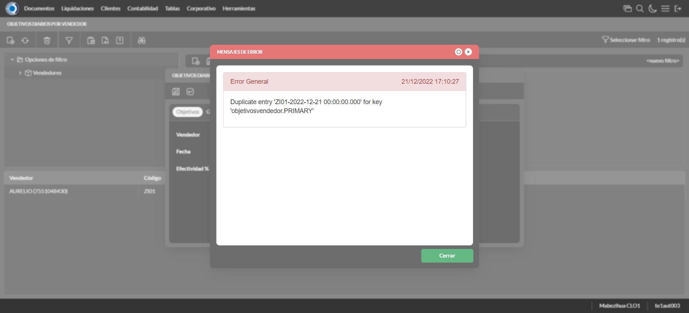
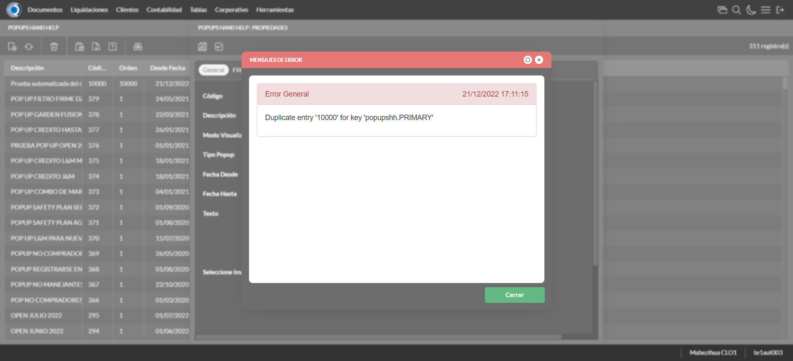
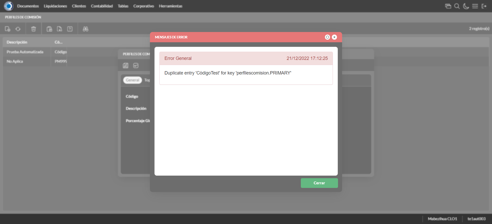
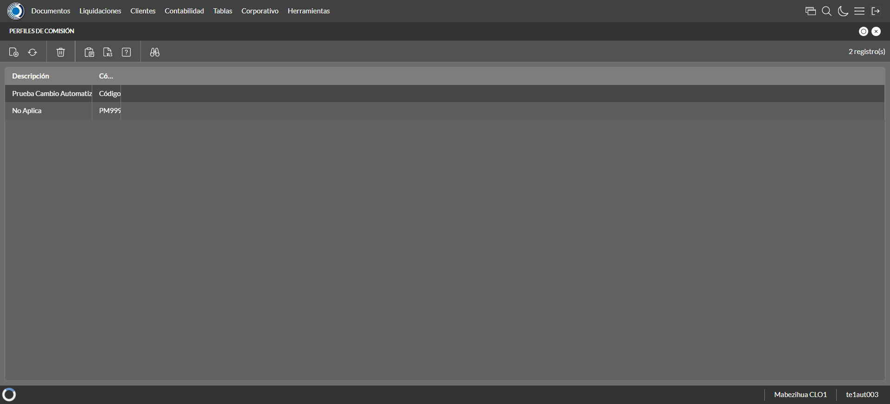
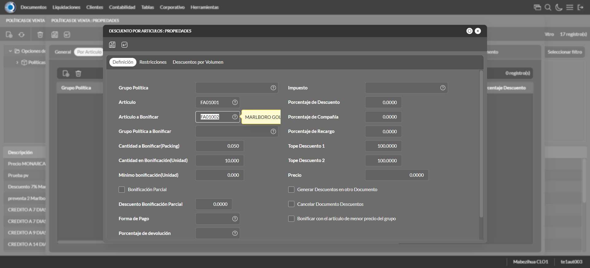
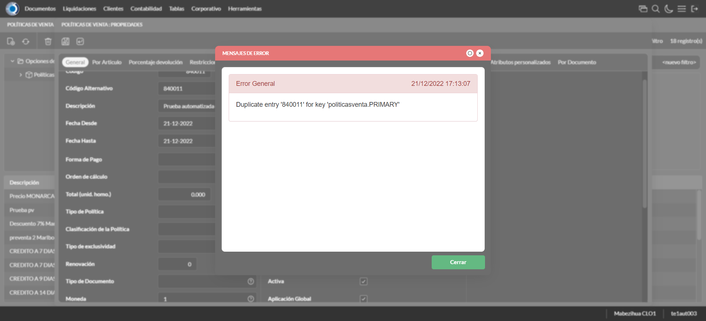
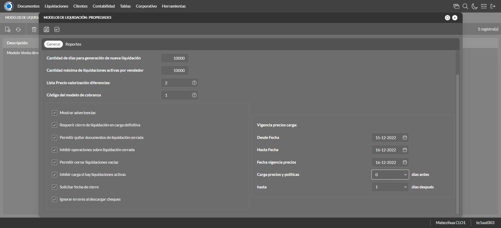
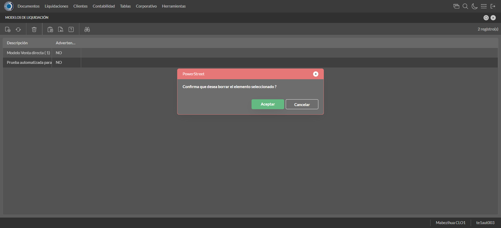
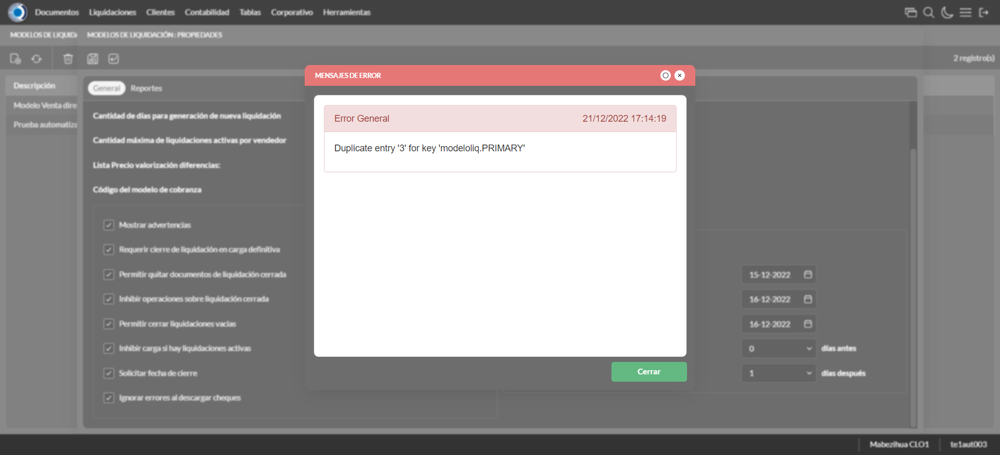

Desarrollado por : Area de Testing PWST
Fecha y hora de inicio : 2022-12-21 11:09:34
Duracion : 0:05:03.819433
Resultado : Total 37，Correctos 36 ，Errores 1 ，Taza de resultado 97.30%
Resumen 97.30% Errores 1 Fallidos 0 Correctos 36 Test realizados 37
| Caso de Prueba | Total | Correctos | Fallido | Error | Detalles | Captura del error |
| ScriptAmarillo.Test: Script Amarillo | 37 | 36 | 0 | 1 | Detalles | |
test |
ft1_1: 2022-12-21 11:09:36,327 - root - INFO - Se abre el chrome
2022-12-21 11:09:37,421 - root - INFO - Entra a la URL
2022-12-21 11:09:37,560 - root - INFO - Maximiza la pantalla
Traceback (most recent call last):
File "C:\Users\jsand\AppData\Local\Programs\Python\Python310\lib\site-packages\selenium-4.4.0-py3.10.egg\selenium\webdriver\remote\switch_to.py", line 87, in frame
frame_reference = self._driver.find_element(By.ID, frame_reference)
File "C:\Users\jsand\AppData\Local\Programs\Python\Python310\lib\site-packages\selenium-4.4.0-py3.10.egg\selenium\webdriver\remote\webdriver.py", line 856, in find_element
return self.execute(Command.FIND_ELEMENT, {
File "C:\Users\jsand\AppData\Local\Programs\Python\Python310\lib\site-packages\selenium-4.4.0-py3.10.egg\selenium\webdriver\remote\webdriver.py", line 434, in execute
self.error_handler.check_response(response)
File "C:\Users\jsand\AppData\Local\Programs\Python\Python310\lib\site-packages\selenium-4.4.0-py3.10.egg\selenium\webdriver\remote\errorhandler.py", line 243, in check_response
raise exception_class(message, screen, stacktrace)
selenium.common.exceptions.NoSuchElementException: Message: no such element: Unable to locate element: {"method":"css selector","selector":"[id="mainFrame"]"}
(Session info: chrome=108.0.5359.125)
Stacktrace:
Backtrace:
(No symbol) [0x00BFF243]
(No symbol) [0x00B87FD1]
(No symbol) [0x00A7D04D]
(No symbol) [0x00AAC0B0]
(No symbol) [0x00AAC22B]
(No symbol) [0x00ADE612]
(No symbol) [0x00AC85D4]
(No symbol) [0x00ADC9EB]
(No symbol) [0x00AC8386]
(No symbol) [0x00AA163C]
(No symbol) [0x00AA269D]
GetHandleVerifier [0x00E99A22+2655074]
GetHandleVerifier [0x00E8CA24+2601828]
GetHandleVerifier [0x00CA8C0A+619850]
GetHandleVerifier [0x00CA7830+614768]
(No symbol) [0x00B905FC]
(No symbol) [0x00B95968]
(No symbol) [0x00B95A55]
(No symbol) [0x00BA051B]
BaseThreadInitThunk [0x76796BD9+25]
RtlGetFullPathName_UEx [0x77B58FD2+1218]
RtlGetFullPathName_UEx [0x77B58F9D+1165]
During handling of the above exception, another exception occurred:
Traceback (most recent call last):
File "C:\Users\jsand\AppData\Local\Programs\Python\Python310\lib\site-packages\selenium-4.4.0-py3.10.egg\selenium\webdriver\remote\switch_to.py", line 90, in frame
frame_reference = self._driver.find_element(By.NAME, frame_reference)
File "C:\Users\jsand\AppData\Local\Programs\Python\Python310\lib\site-packages\selenium-4.4.0-py3.10.egg\selenium\webdriver\remote\webdriver.py", line 856, in find_element
return self.execute(Command.FIND_ELEMENT, {
File "C:\Users\jsand\AppData\Local\Programs\Python\Python310\lib\site-packages\selenium-4.4.0-py3.10.egg\selenium\webdriver\remote\webdriver.py", line 434, in execute
self.error_handler.check_response(response)
File "C:\Users\jsand\AppData\Local\Programs\Python\Python310\lib\site-packages\selenium-4.4.0-py3.10.egg\selenium\webdriver\remote\errorhandler.py", line 243, in check_response
raise exception_class(message, screen, stacktrace)
selenium.common.exceptions.NoSuchElementException: Message: no such element: Unable to locate element: {"method":"css selector","selector":"[name="mainFrame"]"}
(Session info: chrome=108.0.5359.125)
Stacktrace:
Backtrace:
(No symbol) [0x00BFF243]
(No symbol) [0x00B87FD1]
(No symbol) [0x00A7D04D]
(No symbol) [0x00AAC0B0]
(No symbol) [0x00AAC22B]
(No symbol) [0x00ADE612]
(No symbol) [0x00AC85D4]
(No symbol) [0x00ADC9EB]
(No symbol) [0x00AC8386]
(No symbol) [0x00AA163C]
(No symbol) [0x00AA269D]
GetHandleVerifier [0x00E99A22+2655074]
GetHandleVerifier [0x00E8CA24+2601828]
GetHandleVerifier [0x00CA8C0A+619850]
GetHandleVerifier [0x00CA7830+614768]
(No symbol) [0x00B905FC]
(No symbol) [0x00B95968]
(No symbol) [0x00B95A55]
(No symbol) [0x00BA051B]
BaseThreadInitThunk [0x76796BD9+25]
RtlGetFullPathName_UEx [0x77B58FD2+1218]
RtlGetFullPathName_UEx [0x77B58F9D+1165]
During handling of the above exception, another exception occurred:
Traceback (most recent call last):
File "C:\xampp\htdocs\versiones\automatizaciones\AutoPWST\ScriptAmarillo\testCase\ScriptAmarillo.py", line 83, in test
self.driver.switch_to.frame("mainFrame")
File "C:\Users\jsand\AppData\Local\Programs\Python\Python310\lib\site-packages\selenium-4.4.0-py3.10.egg\selenium\webdriver\remote\switch_to.py", line 92, in frame
raise NoSuchFrameException(frame_reference)
selenium.common.exceptions.NoSuchFrameException: Message: mainFrame
|
|
||||
test_000: Ingresa a la base de datos |
pt1_2: 2022-12-21 11:09:40,791 - root - INFO - Escribe el usuario
2022-12-21 11:09:40,902 - root - INFO - Escribe la contraseña
2022-12-21 11:09:41,006 - root - INFO - Se dio clic en el boton ingresar
2022-12-21 11:09:41,707 - root - INFO - Ejecutar Enterprise
2022-12-21 11:09:45,782 - root - INFO - Cambia entre pestañas
|
|
||||
test_001: Ingresa a pantalla Objetivos Diarios |
pt1_3: 2022-12-21 11:09:56,274 - root - INFO - Abre la pantalla de Objetivos Diarios
2022-12-21 11:09:56,921 - root - INFO - La pantalla ejecutada es Lista de precios.
2022-12-21 11:09:56,923 - root - INFO - Captura: C:\xampp\htdocs\versiones\automatizaciones\AutoPWST\ScriptAmarillo\report\img screen：20221221_11_09_56.png
2022-12-21 11:09:57,353 - root - INFO - Se presiona el boton 'Refrescar', para crear un nuevo registro igual al anterior.
2022-12-21 11:10:07,608 - root - INFO - Se presiona el boton 'Nuevo', para crear un nuevo registro.
|

|
||||
test_002: Agregar Objetivos Diarios |
pt1_4: 2022-12-21 11:10:08,323 - root - INFO - Se abrio la pantalla para el ingreso de un registro nuevo.
2022-12-21 11:10:08,447 - root - INFO - El campo 'Vendedor' si se encuentra visible.
2022-12-21 11:10:08,580 - root - INFO - El campo 'Fecha' si se encuentra visible.
2022-12-21 11:10:08,713 - root - INFO - El campo 'Efectividad %' si se encuentra visible.
2022-12-21 11:10:11,031 - root - INFO - Ingresa la efectividad del nuevo registro
2022-12-21 11:10:13,035 - root - INFO - Captura: C:\xampp\htdocs\versiones\automatizaciones\AutoPWST\ScriptAmarillo\report\img screen：20221221_11_10_13.png
2022-12-21 11:10:13,387 - root - INFO - Se hace el cambio de pestaña para continuar con el registro nuevo
2022-12-21 11:10:14,129 - root - INFO - Se presiona el boton 'Nuevo', para crear un nuevo registro.
2022-12-21 11:10:14,821 - root - INFO - El campo 'Grupo Política' si se encuentra visible.
2022-12-21 11:10:14,950 - root - INFO - El campo 'Tipo Objetivo' si se encuentra visible.
2022-12-21 11:10:15,089 - root - INFO - El campo 'Tipo Unidad' si se encuentra visible.
2022-12-21 11:10:15,199 - root - INFO - El campo 'Objetivo Cantidad' si se encuentra visible.
2022-12-21 11:10:15,281 - root - INFO - El campo 'Objetivo Cobertura' si se encuentra visible.
2022-12-21 11:10:18,169 - root - INFO - Ingresa el Objetivo Cantidad del nuevo registro
2022-12-21 11:10:18,417 - root - INFO - Ingresa el Objetivo Cobertura del nuevo registro
2022-12-21 11:10:18,666 - root - INFO - Se da clic en el boton Guardar; se debe crear un nuevo registro.
2022-12-21 11:10:18,935 - root - INFO - Se da clic en el boton Guardar; se debe crear un nuevo registro.
|

|
||||
test_003: Repetir Registro Objetivos Diarios |
pt1_5: 2022-12-21 11:10:19,201 - root - INFO - Se presiona el boton 'Refrescar', para crear un nuevo registro igual al anterior.
2022-12-21 11:10:24,367 - root - INFO - Se presiona el boton 'Nuevo', para crear un nuevo registro igual al anterior.
2022-12-21 11:10:25,058 - root - INFO - Se abrio la pantalla para el ingreso de un registro nuevo.
2022-12-21 11:10:25,170 - root - INFO - El campo 'Vendedor' si se encuentra visible.
2022-12-21 11:10:25,291 - root - INFO - El campo 'Fecha' si se encuentra visible.
2022-12-21 11:10:25,398 - root - INFO - El campo 'Efectividad %' si se encuentra visible.
2022-12-21 11:10:27,421 - root - INFO - Ingresa la efectividad del nuevo registro
2022-12-21 11:10:27,639 - root - INFO - Se da clic en el boton Guardar; se debe crear un nuevo registro.
2022-12-21 11:10:29,646 - root - INFO - Captura: C:\xampp\htdocs\versiones\automatizaciones\AutoPWST\ScriptAmarillo\report\img screen：20221221_11_10_29.png
2022-12-21 11:10:30,061 - root - INFO - Se presiona el boton 'Cerrar', para cerrar el mensaje de duplicidad de llave primaria
2022-12-21 11:10:30,182 - root - INFO - Se presiona el boton 'Cerrar', para cerrar la ventana
|
 | ||||
test_004: Modifica Objetivos Diarios |
pt1_6: 2022-12-21 11:10:30,277 - root - INFO - Se presiona el boton 'Refrescar', para crear un nuevo registro igual al anterior.
2022-12-21 11:10:32,001 - root - INFO - Se da clic en el registro creado, para proceder a modificarlo.
2022-12-21 11:10:32,860 - root - INFO - Ingresa la efectividad del nuevo registro
2022-12-21 11:10:34,870 - root - INFO - Captura: C:\xampp\htdocs\versiones\automatizaciones\AutoPWST\ScriptAmarillo\report\img screen：20221221_11_10_34.png
2022-12-21 11:10:35,289 - root - INFO - Se hace el cambio de pestaña para continuar con el registro nuevo
2022-12-21 11:10:36,531 - root - INFO - Se da clic en el registro creado, para proceder a modificarlo.
2022-12-21 11:10:40,000 - root - INFO - Ingresa el Objetivo Cantidad del nuevo registro
2022-12-21 11:10:40,340 - root - INFO - Ingresa el Objetivo Cobertura del nuevo registro
2022-12-21 11:10:40,582 - root - INFO - Se da clic en el boton Guardar; se debe crear un nuevo registro.
2022-12-21 11:10:40,916 - root - INFO - Se da clic en el boton Guardar; se debe modificar la informacion del registro.
|

|
||||
test_005: Elimina Objetivos Diarios |
pt1_7: 2022-12-21 11:10:41,131 - root - INFO - Se presiona el boton 'Refrescar', para proceder a eliminar el registro.
2022-12-21 11:10:42,863 - root - INFO - Se da clic en el registro creado, para proceder a eliminarlo.
2022-12-21 11:10:43,102 - root - INFO - Se presiona el boton 'Eliminar', para eliminar el registro.
2022-12-21 11:10:45,114 - root - INFO - Captura: C:\xampp\htdocs\versiones\automatizaciones\AutoPWST\ScriptAmarillo\report\img screen：20221221_11_10_45.png
2022-12-21 11:10:45,582 - root - INFO - Se confirma el eliminado del registro
2022-12-21 11:10:45,752 - root - INFO - Se presiona el boton 'Refrescar', para crear un nuevo registro igual al anterior.
2022-12-21 11:10:45,895 - root - INFO - Se presiona el boton 'Cerrar', para cerrar la pantalla de Categorias Fiscales.
|

|
||||
test_006: Ingresa a pantalla Pop Ups |
pt1_8: 2022-12-21 11:10:47,020 - root - INFO - Abre la pantalla de PopUps
2022-12-21 11:10:47,828 - root - INFO - La pantalla ejecutada es PopUps.
2022-12-21 11:10:48,842 - root - INFO - Captura: C:\xampp\htdocs\versiones\automatizaciones\AutoPWST\ScriptAmarillo\report\img screen：20221221_11_10_48.png
2022-12-21 11:10:50,585 - root - INFO - Se ordenó por codigo.
2022-12-21 11:11:00,991 - root - INFO - Se presiona el boton 'Nuevo', para crear un nuevo registro.
|

|
||||
test_007: Agregar Pop Ups |
pt1_9: 2022-12-21 11:11:01,662 - root - INFO - Se abrio la pantalla para el ingreso de un registro nuevo.
2022-12-21 11:11:01,772 - root - INFO - El campo 'Codigo' si se encuentra visible.
2022-12-21 11:11:01,902 - root - INFO - El campo 'Orden' si se encuentra visible.
2022-12-21 11:11:02,009 - root - INFO - El campo 'Activo' si se encuentra visible.
2022-12-21 11:11:02,124 - root - INFO - El campo 'Descrición' si se encuentra visible.
2022-12-21 11:11:02,238 - root - INFO - El campo 'Modo Visualización' si se encuentra visible.
2022-12-21 11:11:02,352 - root - INFO - El campo 'Tipo Popup' si se encuentra visible.
2022-12-21 11:11:02,465 - root - INFO - El campo 'Fecha Desde' si se encuentra visible.
2022-12-21 11:11:02,576 - root - INFO - El campo 'Fecha Hasta' si se encuentra visible.
2022-12-21 11:11:02,689 - root - INFO - El campo 'Texto' si se encuentra visible.
2022-12-21 11:11:02,764 - root - INFO - El campo 'Seleccione Imagen' si se encuentra visible.
2022-12-21 11:11:02,874 - root - INFO - Ingresa el codigo del nuevo registro
2022-12-21 11:11:03,083 - root - INFO - Ingresa la orden del nuevo registro
2022-12-21 11:11:04,409 - root - INFO - Hizo click en el checkbox Activo
2022-12-21 11:11:04,651 - root - INFO - Ingresa la descripción del nuevo registro
2022-12-21 11:11:05,075 - root - INFO - Se dió click en la opción Pantalla Held.
2022-12-21 11:11:06,487 - root - INFO - Se dió doble click en el registro de Tipo Pop Up.
2022-12-21 11:11:07,110 - root - INFO - Ingresa el texto del nuevo registro
2022-12-21 11:11:08,113 - root - INFO - Captura: C:\xampp\htdocs\versiones\automatizaciones\AutoPWST\ScriptAmarillo\report\img screen：20221221_11_11_08.png
2022-12-21 11:11:08,518 - root - INFO - Se da clic en el boton Guardar; se debe crear un nuevo registro.
|

|
||||
test_008: Repetir Registro Pop Ups |
pt1_10: 2022-12-21 11:11:08,834 - root - INFO - Se presiona el boton 'Refrescar', para crear un nuevo registro igual al anterior.
2022-12-21 11:11:09,598 - root - INFO - Se presiona el boton 'Nuevo', para crear un nuevo registro igual al anterior.
2022-12-21 11:11:10,260 - root - INFO - Se abrio la pantalla para el ingreso de un registro nuevo.
2022-12-21 11:11:10,515 - root - INFO - El campo 'Codigo' si se encuentra visible.
2022-12-21 11:11:10,571 - root - INFO - El campo 'Orden' si se encuentra visible.
2022-12-21 11:11:10,623 - root - INFO - El campo 'Activo' si se encuentra visible.
2022-12-21 11:11:10,678 - root - INFO - El campo 'Descrición' si se encuentra visible.
2022-12-21 11:11:10,730 - root - INFO - El campo 'Modo Visualización' si se encuentra visible.
2022-12-21 11:11:10,843 - root - INFO - El campo 'Tipo Popup' si se encuentra visible.
2022-12-21 11:11:10,963 - root - INFO - El campo 'Fecha Desde' si se encuentra visible.
2022-12-21 11:11:11,091 - root - INFO - El campo 'Fecha Hasta' si se encuentra visible.
2022-12-21 11:11:11,208 - root - INFO - El campo 'Texto' si se encuentra visible.
2022-12-21 11:11:11,380 - root - INFO - El campo 'Seleccione Imagen' si se encuentra visible.
2022-12-21 11:11:11,540 - root - INFO - Ingresa el codigo del nuevo registro
2022-12-21 11:11:11,677 - root - INFO - Ingresa la orden del nuevo registro
2022-12-21 11:11:13,074 - root - INFO - Hizo click en el checkbox Activo
2022-12-21 11:11:13,625 - root - INFO - Ingresa la descripción del nuevo registro
2022-12-21 11:11:14,091 - root - INFO - Se dió click en la opción Pantalla Hand Held.
2022-12-21 11:11:15,203 - root - INFO - Se dió doble click en el registro de Tipo PopUp.
2022-12-21 11:11:15,594 - root - INFO - Ingresa el texto del nuevo registro
2022-12-21 11:11:15,747 - root - INFO - Se da clic en el boton Guardar; NO se debe crear un nuevo registro.
2022-12-21 11:11:16,754 - root - INFO - Captura: C:\xampp\htdocs\versiones\automatizaciones\AutoPWST\ScriptAmarillo\report\img screen：20221221_11_11_16.png
2022-12-21 11:11:17,367 - root - INFO - Se presiona el boton 'Cerrar', para cerrar el mensaje de duplicidad de llave primaria
2022-12-21 11:11:17,709 - root - INFO - Se presiona el boton 'Cerrar', para cerrar la ventana
|
 | ||||
test_009: Modifica Pop Ups |
pt1_11: 2022-12-21 11:11:18,007 - root - INFO - Se presiona el boton 'Refrescar', para proceder a modificar el registro.
2022-12-21 11:11:20,235 - root - INFO - Se dió dos veces click en el encabezado para modificar el orden de los registros.
2022-12-21 11:11:22,359 - root - INFO - Se da clic en el registro creado, para proceder a modificarlo.
2022-12-21 11:11:22,969 - root - INFO - Se modifica el contenido del campo Orden
2022-12-21 11:11:24,057 - root - INFO - Hizo click en el checkbox activo
2022-12-21 11:11:24,260 - root - INFO - Se modifica el contenido del campo Descripción
2022-12-21 11:11:24,632 - root - INFO - Se dió click en la opción Ambos.
2022-12-21 11:11:25,844 - root - INFO - Se dió doble click en el registro de Tipo PopUp.
2022-12-21 11:11:26,055 - root - INFO - Se modifica el contenido del campo Texto
2022-12-21 11:11:27,067 - root - INFO - Captura: C:\xampp\htdocs\versiones\automatizaciones\AutoPWST\ScriptAmarillo\report\img screen：20221221_11_11_27.png
2022-12-21 11:11:27,278 - root - INFO - Se da clic en el boton Guardar; se debe modificar la informacion del registro.
|

|
||||
test_010: Elimina PopUps |
pt1_12: 2022-12-21 11:11:27,511 - root - INFO - Se presiona el boton 'Refrescar', para proceder a eliminar el registro.
2022-12-21 11:11:29,174 - root - INFO - Se da clic en el registro creado, para proceder a eliminarlo.
2022-12-21 11:11:30,276 - root - INFO - Se presiona el boton 'Eliminar', para eliminar el registro.
2022-12-21 11:11:30,277 - root - INFO - Captura: C:\xampp\htdocs\versiones\automatizaciones\AutoPWST\ScriptAmarillo\report\img screen：20221221_11_11_30.png
2022-12-21 11:11:30,548 - root - INFO - Se confirma el eliminado del registro
2022-12-21 11:11:31,141 - root - INFO - Se presiona el boton 'Refrescar', para veriicar si el registro ha sido eliminado.
2022-12-21 11:11:31,679 - root - INFO - Se presiona el boton 'Cerrar', para cerrar la pantalla de Pop Ups.
|

|
||||
test_011: Ingresa a pantalla Paquetes Formulario |
pt1_13: 2022-12-21 11:11:32,568 - root - INFO - Abre la pantalla de Paquetes de Formularios
2022-12-21 11:11:33,136 - root - INFO - Captura: C:\xampp\htdocs\versiones\automatizaciones\AutoPWST\ScriptAmarillo\report\img screen：20221221_11_11_33.png
2022-12-21 11:11:33,260 - root - INFO - La pantalla ejecutada es Zonas de Ventas.
2022-12-21 11:11:43,753 - root - INFO - Se presiona el boton 'Nuevo', para crear un nuevo registro.
|

|
||||
test_012: Agregar Paquetes Formulario |
pt1_14: 2022-12-21 11:11:44,304 - root - INFO - Se abrio la pantalla para el ingreso de un registro nuevo.
2022-12-21 11:11:44,335 - root - INFO - El campo 'Número Paquete' si se encuentra visible.
2022-12-21 11:11:44,365 - root - INFO - El campo 'Formulario Inicial' si se encuentra visible.
2022-12-21 11:11:44,395 - root - INFO - El campo 'Cantidad Formularios' si se encuentra visible.
2022-12-21 11:11:45,442 - root - INFO - Captura: C:\xampp\htdocs\versiones\automatizaciones\AutoPWST\ScriptAmarillo\report\img screen：20221221_11_11_45.png
2022-12-21 11:11:45,564 - root - INFO - Ingresa la cantidad de formularios del nuevo registro
2022-12-21 11:11:45,639 - root - INFO - Se da clic en el boton Guardar; se debe crear un nuevo registro.
|

|
||||
test_013: Modifica Paquetes Formulario |
pt1_15: 2022-12-21 11:11:45,818 - root - INFO - Se presiona el boton 'Refrescar', para crear un nuevo registro igual al anterior.
2022-12-21 11:11:47,962 - root - INFO - Se da clic en el registro creado, para proceder a modificarlo.
2022-12-21 11:11:48,966 - root - INFO - Captura: C:\xampp\htdocs\versiones\automatizaciones\AutoPWST\ScriptAmarillo\report\img screen：20221221_11_11_48.png
2022-12-21 11:11:49,151 - root - INFO - Se presiona el boton 'Cerrar', para cerrar la ventana
|

|
||||
test_014: Elimina Paquetes Formulario |
pt1_16: 2022-12-21 11:11:49,257 - root - INFO - Se presiona el boton 'Refrescar', para proceder a eliminar el registro.
2022-12-21 11:11:50,861 - root - INFO - Se da clic en el registro creado, para proceder a eliminarlo.
2022-12-21 11:11:50,933 - root - INFO - Se presiona el boton 'Eliminar', para eliminar el registro.
2022-12-21 11:11:51,942 - root - INFO - Captura: C:\xampp\htdocs\versiones\automatizaciones\AutoPWST\ScriptAmarillo\report\img screen：20221221_11_11_51.png
2022-12-21 11:11:52,140 - root - INFO - Se confirma el eliminado del registro
2022-12-21 11:11:52,309 - root - INFO - Se presiona el boton 'Refrescar', para crear un nuevo registro igual al anterior.
2022-12-21 11:11:52,417 - root - INFO - Se presiona el boton 'Cerrar', para cerrar la pantalla de Categorias Fiscales.
|

|
||||
test_015: Ingresa a pantalla Perfiles Comision |
pt1_17: 2022-12-21 11:11:53,338 - root - INFO - Abre la pantalla de Perfiles de Comisión
2022-12-21 11:11:53,886 - root - INFO - La pantalla ejecutada es Perfiles de Comisión.
2022-12-21 11:11:53,889 - root - INFO - Captura: C:\xampp\htdocs\versiones\automatizaciones\AutoPWST\ScriptAmarillo\report\img screen：20221221_11_11_53.png
2022-12-21 11:12:04,524 - root - INFO - Se presiona el boton 'Nuevo', para crear un nuevo registro.
|

|
||||
test_016: Agregar Perfiles Comision |
pt1_18: 2022-12-21 11:12:05,076 - root - INFO - Se abrio la pantalla para el ingreso de un registro nuevo.
2022-12-21 11:12:05,104 - root - INFO - El campo 'Codigo' si se encuentra visible.
2022-12-21 11:12:05,132 - root - INFO - El campo 'Descrición' si se encuentra visible.
2022-12-21 11:12:05,160 - root - INFO - El campo 'Porcentaje Global' si se encuentra visible.
2022-12-21 11:12:05,190 - root - INFO - El campo 'Con impuesto' si se encuentra visible.
2022-12-21 11:12:05,217 - root - INFO - El campo 'Comisión Repartidor' si se encuentra visible.
2022-12-21 11:12:05,259 - root - INFO - Ingresa el codigo del nuevo registro
2022-12-21 11:12:05,345 - root - INFO - Ingresa la descripción del nuevo registro
2022-12-21 11:12:05,400 - root - INFO - Ingresa el Porcentaje Global del nuevo registro
2022-12-21 11:12:05,480 - root - INFO - Se hizó click en el Checkbox Con impuesto
2022-12-21 11:12:05,532 - root - INFO - Se hizó click en el checkbox Comisión Repartidor
2022-12-21 11:12:06,541 - root - INFO - Captura: C:\xampp\htdocs\versiones\automatizaciones\AutoPWST\ScriptAmarillo\report\img screen：20221221_11_12_06.png
2022-12-21 11:12:06,713 - root - INFO - Se hace el cambio a la pestaña Topes para continuar con el registro nuevo
2022-12-21 11:12:07,306 - root - INFO - Se presiona el boton 'Nuevo', para crear un nuevo registro de Topes.
2022-12-21 11:12:07,865 - root - INFO - El campo 'Moneda' si se encuentra visible.
2022-12-21 11:12:07,896 - root - INFO - El campo 'Tope' si se encuentra visible.
2022-12-21 11:12:07,925 - root - INFO - El campo 'Porcentaje' si se encuentra visible.
2022-12-21 11:12:08,829 - root - INFO - Se dió doble click en el registro de Moneda.
2022-12-21 11:12:08,910 - root - INFO - Ingresa el tope del nuevo registro
2022-12-21 11:12:08,985 - root - INFO - Ingresa el Porcentaje del nuevo registro
2022-12-21 11:12:09,081 - root - INFO - Se da clic en el boton Guardar; se debe crear un nuevo registro de Topes.
2022-12-21 11:12:09,287 - root - INFO - Se hace el cambio a la pestaña Cuenta Articulo para continuar con el registro nuevo
2022-12-21 11:12:09,874 - root - INFO - Se presiona el boton 'Nuevo', para crear un nuevo registro de Cuenta Articulo.
2022-12-21 11:12:10,424 - root - INFO - El campo 'Cuenta' si se encuentra visible.
2022-12-21 11:12:10,457 - root - INFO - El campo 'Artículo' si se encuentra visible.
2022-12-21 11:12:10,482 - root - INFO - El campo 'Porcentaje' si se encuentra visible.
2022-12-21 11:12:11,904 - root - INFO - Se dió doble click en el registro de Cuenta.
2022-12-21 11:12:12,937 - root - INFO - Se dió doble click en el registro de Articulo.
2022-12-21 11:12:13,020 - root - INFO - Ingresa el Porcentaje del nuevo registro
2022-12-21 11:12:13,089 - root - INFO - Se da clic en el boton Guardar; se debe crear un nuevo registro de Cuenta Articulo.
2022-12-21 11:12:13,291 - root - INFO - Se hace el cambio a la pestaña Cuentas para continuar con el registro nuevo
2022-12-21 11:12:13,880 - root - INFO - Se presiona el boton 'Nuevo', para crear un nuevo registro de Cuentas.
2022-12-21 11:12:14,463 - root - INFO - El campo 'Cuenta' si se encuentra visible.
2022-12-21 11:12:14,491 - root - INFO - El campo 'Porcentaje' si se encuentra visible.
2022-12-21 11:12:15,899 - root - INFO - Se dió doble click en el registro de Cuenta.
2022-12-21 11:12:15,974 - root - INFO - Ingresa el Porcentaje del nuevo registro
2022-12-21 11:12:16,104 - root - INFO - Se da clic en el boton Guardar; se debe crear un nuevo registro de Cuentas.
2022-12-21 11:12:16,298 - root - INFO - Se hace el cambio a la pestaña Articulos para continuar con el registro nuevo
2022-12-21 11:12:16,894 - root - INFO - Se presiona el boton 'Nuevo', para crear un nuevo registro de Articulos.
2022-12-21 11:12:17,459 - root - INFO - El campo 'Artículo' si se encuentra visible.
2022-12-21 11:12:17,486 - root - INFO - El campo 'Porcentaje' si se encuentra visible.
2022-12-21 11:12:18,931 - root - INFO - Se dió doble click en el registro de Articulo.
2022-12-21 11:12:19,028 - root - INFO - Ingresa el Porcentaje del nuevo registro
2022-12-21 11:12:19,093 - root - INFO - Se da clic en el boton Guardar; se debe crear un nuevo registro de Articulos.
2022-12-21 11:12:19,318 - root - INFO - Se hace el cambio a la pestaña Tipos de Documento para continuar con el registro nuevo
2022-12-21 11:12:19,906 - root - INFO - Se presiona el boton 'Nuevo', para crear un nuevo registro de Tipo Documento.
2022-12-21 11:12:20,456 - root - INFO - El campo 'Tipo Documento' si se encuentra visible.
2022-12-21 11:12:20,492 - root - INFO - El campo 'Origen' si se encuentra visible.
2022-12-21 11:12:20,528 - root - INFO - El campo 'Signo' si se encuentra visible.
2022-12-21 11:12:20,558 - root - INFO - El campo 'Cancelado' si se encuentra visible.
2022-12-21 11:12:21,464 - root - INFO - Se dió doble click en el registro de Tipo Documento.
2022-12-21 11:12:23,831 - root - INFO - Se dió click en la opción Backoffice.
2022-12-21 11:12:24,194 - root - INFO - Se dió click en la opción Suma.
2022-12-21 11:12:24,265 - root - INFO - Se dió click en el checkbox Cancelado.
2022-12-21 11:12:24,316 - root - INFO - Se da clic en el boton Guardar; se debe crear un nuevo registro de Tipos Documento.
2022-12-21 11:12:24,516 - root - INFO - Se da clic en el boton Guardar; se debe crear un nuevo registro.
|

|
||||
test_017: Repetir Registro Perfiles Comision |
pt1_19: 2022-12-21 11:12:24,772 - root - INFO - Se presiona el boton 'Refrescar', para crear un nuevo registro igual al anterior.
2022-12-21 11:12:24,885 - root - INFO - Se presiona el boton 'Nuevo', para crear un nuevo registro igual al anterior.
2022-12-21 11:12:25,447 - root - INFO - Se abrio la pantalla para el ingreso de un registro nuevo.
2022-12-21 11:12:25,475 - root - INFO - El campo 'Codigo' si se encuentra visible.
2022-12-21 11:12:25,503 - root - INFO - El campo 'Descrición' si se encuentra visible.
2022-12-21 11:12:25,540 - root - INFO - El campo 'Porcentaje Global' si se encuentra visible.
2022-12-21 11:12:25,569 - root - INFO - El campo 'Con impuesto' si se encuentra visible.
2022-12-21 11:12:25,597 - root - INFO - El campo 'Comisión Repartidor' si se encuentra visible.
2022-12-21 11:12:25,640 - root - INFO - Ingresa el codigo del nuevo registro
2022-12-21 11:12:25,720 - root - INFO - Ingresa la descripción del nuevo registro
2022-12-21 11:12:25,802 - root - INFO - Ingresa el Porcentaje Global del nuevo registro
2022-12-21 11:12:25,855 - root - INFO - Se hizó click en el Checkbox Con impuesto
2022-12-21 11:12:25,904 - root - INFO - Se hizó click en el checkbox Comisión Repartidor
2022-12-21 11:12:25,947 - root - INFO - Se da clic en el boton Guardar; No se debe crear un nuevo registro.
2022-12-21 11:12:26,951 - root - INFO - Captura: C:\xampp\htdocs\versiones\automatizaciones\AutoPWST\ScriptAmarillo\report\img screen：20221221_11_12_26.png
2022-12-21 11:12:27,186 - root - INFO - Se presiona el boton 'Cerrar', para cerrar el mensaje de duplicidad de llave primaria
2022-12-21 11:12:27,301 - root - INFO - Se presiona el boton 'Cerrar', para cerrar la ventana
|
 | ||||
test_018: Modifica Perfiles Comision |
pt1_20: 2022-12-21 11:12:27,413 - root - INFO - Se presiona el boton 'Refrescar', para proceder a modificar el registro.
2022-12-21 11:12:29,036 - root - INFO - Se da doble click en el registro creado, para proceder a modificarlo.
2022-12-21 11:12:29,670 - root - INFO - Se modifica el contenido del campo Descripción
2022-12-21 11:12:29,747 - root - INFO - Se modifica el contenido del campo Porcentaje Global
2022-12-21 11:12:29,823 - root - INFO - Se hizó click en el checkbox Con impuesto
2022-12-21 11:12:29,892 - root - INFO - Se hizó click en el checkbox Comisión Repartidor
2022-12-21 11:12:31,904 - root - INFO - Captura: C:\xampp\htdocs\versiones\automatizaciones\AutoPWST\ScriptAmarillo\report\img screen：20221221_11_12_31.png
2022-12-21 11:12:32,095 - root - INFO - Se da clic en el boton Guardar; se debe modificar la informacion del registro.
|

|
||||
test_019: Elimina Perfiles Comision |
pt1_21: 2022-12-21 11:12:32,389 - root - INFO - Se presiona el boton 'Refrescar', para proceder a eliminar el registro.
2022-12-21 11:12:34,023 - root - INFO - Se da clic en el registro creado, para proceder a eliminarlo.
2022-12-21 11:12:35,126 - root - INFO - Se da clic en la ventana de tope, para proceder a eliminarlo.
2022-12-21 11:12:36,227 - root - INFO - Se da clic en el tope creado, para proceder a eliminarlo.
2022-12-21 11:12:36,858 - root - INFO - Se da clic en la ventana cuenta/articulo, para proceder a eliminarlo.
2022-12-21 11:12:37,932 - root - INFO - Se da clic en la cuenta/articulo creado, para proceder a eliminarlo.
2022-12-21 11:12:38,571 - root - INFO - Se da clic en la ventana cuentas, para proceder a eliminarlo.
2022-12-21 11:12:39,666 - root - INFO - Se da clic en la cuenta creado, para proceder a eliminarlo.
2022-12-21 11:12:40,314 - root - INFO - Se da clic en la cuenta/articulo creado, para proceder a eliminarlo.
2022-12-21 11:12:41,435 - root - INFO - Se da clic en el articulo creado, para proceder a eliminarlo.
2022-12-21 11:12:42,117 - root - INFO - Se da clic en la ventana tipo documento, para proceder a eliminarlo.
2022-12-21 11:12:43,227 - root - INFO - Se da clic en el tipo de documento creado, para proceder a eliminarlo.
2022-12-21 11:12:43,442 - root - INFO - Se da clic en el boton Guardar; se debe crear un nuevo registro.
2022-12-21 11:12:44,059 - root - INFO - Se da clic en el registro creado, para proceder a eliminarlo.
2022-12-21 11:12:44,118 - root - INFO - Se presiona el boton 'Eliminar', para eliminar el registro.
2022-12-21 11:12:44,119 - root - INFO - Captura: C:\xampp\htdocs\versiones\automatizaciones\AutoPWST\ScriptAmarillo\report\img screen：20221221_11_12_44.png
2022-12-21 11:12:44,350 - root - INFO - Se confirma el eliminado del registro
2022-12-21 11:12:44,484 - root - INFO - Se presiona el boton 'Refrescar', para verificar que el registro se ha eliminado.
2022-12-21 11:12:44,668 - root - INFO - Se presiona el boton 'Cerrar', para cerrar la pantalla de Perfiles de Comisión.
|
 | ||||
test_020: Ingresa a pantalla Politicas de Venta |
pt1_22: 2022-12-21 11:12:45,601 - root - INFO - Abre la pantalla de Politicas de Venta
2022-12-21 11:12:46,151 - root - INFO - La pantalla ejecutada es Politicas de Venta
2022-12-21 11:12:47,166 - root - INFO - Captura: C:\xampp\htdocs\versiones\automatizaciones\AutoPWST\ScriptAmarillo\report\img screen：20221221_11_12_47.png
2022-12-21 11:12:57,778 - root - INFO - Se presiona el boton 'Nuevo', para crear un nuevo registro.
|

|
||||
test_021: Agregar Perfiles Politicas de Venta |
pt1_23: 2022-12-21 11:12:58,354 - root - INFO - Se abrio la pantalla para el ingreso de un registro nuevo.
2022-12-21 11:12:58,383 - root - INFO - El campo 'Codigo' si se encuentra visible.
2022-12-21 11:12:58,445 - root - INFO - El campo 'Codigo Alternativo' si se encuentra visible.
2022-12-21 11:12:58,477 - root - INFO - El campo 'Descrición' si se encuentra visible.
2022-12-21 11:12:58,507 - root - INFO - El campo 'Moneda' si se encuentra visible.
2022-12-21 11:12:58,539 - root - INFO - El campo 'Aplicable en' si se encuentra visible.
2022-12-21 11:12:58,569 - root - INFO - El campo 'Activa' si se encuentra visible.
2022-12-21 11:12:58,598 - root - INFO - El campo 'Aplicación Global' si se encuentra visible.
2022-12-21 11:12:58,651 - root - INFO - Ingresa el codigo del nuevo registro
2022-12-21 11:12:58,753 - root - INFO - Ingresa el codigo alternativo del nuevo registro
2022-12-21 11:12:58,873 - root - INFO - Ingresa la descripción del nuevo registro
2022-12-21 11:12:59,834 - root - INFO - Se dió doble click en el registro de Moneda.
2022-12-21 11:13:00,341 - root - INFO - Se dió click en la opción BackOffice y Mobile.
2022-12-21 11:13:01,420 - root - INFO - Se dió click en el checkbox Activa.
2022-12-21 11:13:01,487 - root - INFO - Se dió click en el checkbox Aplicación Global.
2022-12-21 11:13:01,557 - root - INFO - Se hace el cambio a la pestaña Por Articulo para continuar con el registro nuevo
2022-12-21 11:13:02,143 - root - INFO - Se presiona el boton 'Nuevo', para crear un nuevo registro de Por Articulo.
2022-12-21 11:13:02,765 - root - INFO - El campo 'Artículo' si se encuentra visible.
2022-12-21 11:13:02,796 - root - INFO - El campo 'Artículo a Bonificar' si se encuentra visible.
2022-12-21 11:13:02,834 - root - INFO - El campo 'Cantidad a Bonificar(Packing)' si se encuentra visible.
2022-12-21 11:13:02,868 - root - INFO - El campo 'Cantidad en Bonificación(Unidad)' si se encuentra visible.
2022-12-21 11:13:02,899 - root - INFO - El campo 'Tope Descuento 1' si se encuentra visible.
2022-12-21 11:13:02,933 - root - INFO - El campo 'Tope Descuento 2' si se encuentra visible.
2022-12-21 11:13:03,039 - root - INFO - Ingresa el Articulo del nuevo registro
2022-12-21 11:13:03,122 - root - INFO - Ingresa el Articulo a bonificar del nuevo registro
2022-12-21 11:13:03,236 - root - INFO - Ingresa la Cantidad a Bonificar del nuevo registro
2022-12-21 11:13:03,308 - root - INFO - Ingresa la Cantidad en Bonificación del nuevo registro
2022-12-21 11:13:03,389 - root - INFO - Ingresa el Tope Descuento 1 del nuevo registro
2022-12-21 11:13:03,483 - root - INFO - Ingresa el Tope Descuento 2 del nuevo registro
2022-12-21 11:13:04,486 - root - INFO - Captura: C:\xampp\htdocs\versiones\automatizaciones\AutoPWST\ScriptAmarillo\report\img screen：20221221_11_13_04.png
2022-12-21 11:13:04,739 - root - INFO - Se presiona el boton 'Guardar', para guardar el registro de Por Articulo.
2022-12-21 11:13:04,983 - root - INFO - Se da clic en el boton Guardar; se debe crear un nuevo registro.
|
 | ||||
test_022: Repetir Registro Politicas de Venta |
pt1_24: 2022-12-21 11:13:05,335 - root - INFO - Se presiona el boton 'Refrescar', para crear un nuevo registro igual al anterior.
2022-12-21 11:13:05,466 - root - INFO - Se presiona el boton 'Nuevo', para crear un nuevo registro igual al anterior.
2022-12-21 11:13:06,065 - root - INFO - Se abrio la pantalla para el ingreso de un registro nuevo.
2022-12-21 11:13:06,118 - root - INFO - Ingresa el codigo del nuevo registro
2022-12-21 11:13:06,188 - root - INFO - Ingresa el codigo alternativo del nuevo registro
2022-12-21 11:13:06,297 - root - INFO - Ingresa la descripción del nuevo registro
2022-12-21 11:13:07,207 - root - INFO - Se dió doble click en el registro de Moneda.
2022-12-21 11:13:07,699 - root - INFO - Se dió click en la opción BackOffice y Mobile.
2022-12-21 11:13:07,761 - root - INFO - Se dió click en el checkbox Activa.
2022-12-21 11:13:07,814 - root - INFO - Se dió click en el checkbox Aplicación Global.
2022-12-21 11:13:07,862 - root - INFO - Se da clic en el boton Guardar; No se debe crear un nuevo registro.
2022-12-21 11:13:08,875 - root - INFO - Captura: C:\xampp\htdocs\versiones\automatizaciones\AutoPWST\ScriptAmarillo\report\img screen：20221221_11_13_08.png
2022-12-21 11:13:09,142 - root - INFO - Se presiona el boton 'Cerrar', para cerrar el mensaje de duplicidad de llave primaria
2022-12-21 11:13:09,266 - root - INFO - Se presiona el boton 'Cerrar', para cerrar la ventana
|
 | ||||
test_023: Modifica Politicas de Venta |
pt1_25: 2022-12-21 11:13:09,385 - root - INFO - Se presiona el boton 'Refrescar', para proceder a modificar el registro.
2022-12-21 11:13:11,008 - root - INFO - Se da clic en el registro creado, para proceder a modificarlo.
2022-12-21 11:13:11,675 - root - INFO - Se modifica el contenido del campo Codigo Alternativo
2022-12-21 11:13:11,816 - root - INFO - Se modifica el contenido del campo Descripcion
2022-12-21 11:13:11,877 - root - INFO - Se dió click en el checkbox Aplicación Global.
2022-12-21 11:13:11,938 - root - INFO - Se hace el cambio a la pestaña Por Articulo para continuar con la modificacion del registro
2022-12-21 11:13:13,076 - root - INFO - Se da clic en el registro de Por Articulo, para proceder a modificarlo.
2022-12-21 11:13:13,773 - root - INFO - Se modifica el contenido del campo Articulo
2022-12-21 11:13:13,930 - root - INFO - Se modifica el contenido del campo Articulo a Bonificar
2022-12-21 11:13:14,045 - root - INFO - Se modifica el contenido del campo Cantidad a Bonificar
2022-12-21 11:13:14,185 - root - INFO - Se modifica el contenido del campo Cantidad en Bonificación
2022-12-21 11:13:15,200 - root - INFO - Captura: C:\xampp\htdocs\versiones\automatizaciones\AutoPWST\ScriptAmarillo\report\img screen：20221221_11_13_15.png
2022-12-21 11:13:15,475 - root - INFO - Se presiona el boton 'Guardar', para guardar la modificación del registro de Por Articulo.
2022-12-21 11:13:15,680 - root - INFO - Se da clic en el boton Guardar; se debe modificar la informacion del registro.
|
|||||
test_024: Elimina Politicas de Venta |
pt1_26: 2022-12-21 11:13:16,000 - root - INFO - Se presiona el boton 'Refrescar', para proceder a eliminar el registro.
2022-12-21 11:13:17,629 - root - INFO - Se da clic en el registro creado, para proceder a eliminarlo.
2022-12-21 11:13:18,228 - root - INFO - Se hace el cambio a la pestaña Por Articulo para continuar con la eliminación del registro
2022-12-21 11:13:19,385 - root - INFO - Se da clic en el registro Por Articulo, para proceder a eliminarlo.
2022-12-21 11:13:19,454 - root - INFO - Se presiona el boton 'Eliminar', para eliminar el registro de Por Articulo.
2022-12-21 11:13:19,582 - root - INFO - Se da clic en el boton Guardar; se debe modificar la informacion del registro.
2022-12-21 11:13:20,180 - root - INFO - Se da clic en el registro creado, para proceder a eliminarlo.
2022-12-21 11:13:21,277 - root - INFO - Se presiona el boton 'Eliminar', para eliminar el registro.
2022-12-21 11:13:21,278 - root - INFO - Captura: C:\xampp\htdocs\versiones\automatizaciones\AutoPWST\ScriptAmarillo\report\img screen：20221221_11_13_21.png
2022-12-21 11:13:21,480 - root - INFO - Se confirma el eliminado del registro
2022-12-21 11:13:21,633 - root - INFO - Se presiona el boton 'Refrescar', para verificar si el registro ha sido eliminado.
2022-12-21 11:13:21,778 - root - INFO - Se presiona el boton 'Cerrar', para cerrar la pantalla de Politicas de Venta.
|

|
||||
test_025: Ingresa a pantalla Modelos de Liquidacion |
pt1_27: 2022-12-21 11:13:22,695 - root - INFO - Abre la pantalla de Modelos Liquidación
2022-12-21 11:13:23,272 - root - INFO - La pantalla ejecutada es Modelos Liquidacion.
2022-12-21 11:13:25,272 - root - INFO - Captura: C:\xampp\htdocs\versiones\automatizaciones\AutoPWST\ScriptAmarillo\report\img screen：20221221_11_13_25.png
2022-12-21 11:13:25,522 - root - INFO - Se presiona el boton 'Nuevo', para crear un nuevo registro.
|

|
||||
test_026: Agregar Perfiles Modelos de Liquidacion |
pt1_28: 2022-12-21 11:13:26,069 - root - INFO - Se abrio la pantalla para el ingreso de un registro nuevo.
2022-12-21 11:13:26,100 - root - INFO - El campo 'Codigo' si se encuentra visible.
2022-12-21 11:13:26,130 - root - INFO - El campo 'Descrición' si se encuentra visible.
2022-12-21 11:13:26,160 - root - INFO - El campo 'Cantidad de días para generación de nueva liquidación' si se encuentra visible.
2022-12-21 11:13:26,194 - root - INFO - El campo 'Cantidad máxima de liquidaciones activas por vendedor' si se encuentra visible.
2022-12-21 11:13:26,234 - root - INFO - El campo 'Lista Precio valorización diferencias' por dif. tipo cambio' si se encuentra visible.
2022-12-21 11:13:26,266 - root - INFO - El campo 'Código del modelo de cobranza' si se encuentra visible.
2022-12-21 11:13:26,301 - root - INFO - El campo 'Mostrar advertencias' si se encuentra visible.
2022-12-21 11:13:26,333 - root - INFO - El campo 'Requerir cierre de liquidación en carga definitiva' si se encuentra visible.
2022-12-21 11:13:26,361 - root - INFO - El campo 'Permitir quitar documentos de liquidación cerrada' si se encuentra visible.
2022-12-21 11:13:26,390 - root - INFO - El campo 'Inhibir operaciones sobre liquidación cerrada' si se encuentra visible.
2022-12-21 11:13:26,419 - root - INFO - El campo 'Permitir cerrar liquidaciones vacias' si se encuentra visible.
2022-12-21 11:13:26,451 - root - INFO - El campo 'Inhibir carga si hay liquidaciones activas' si se encuentra visible.
2022-12-21 11:13:26,497 - root - INFO - El campo 'Solicitar fecha de cierre' si se encuentra visible.
2022-12-21 11:13:26,527 - root - INFO - El campo 'Ignorar errores al descargar cheques' si se encuentra visible.
2022-12-21 11:13:26,556 - root - INFO - El campo 'Desde Fecha' si se encuentra visible.
2022-12-21 11:13:26,584 - root - INFO - El campo 'Hasta Fecha' si se encuentra visible.
2022-12-21 11:13:26,613 - root - INFO - El campo 'Fecha vigencia precios' si se encuentra visible.
2022-12-21 11:13:26,641 - root - INFO - El campo 'Carga precios y políticas' si se encuentra visible.
2022-12-21 11:13:26,668 - root - INFO - El campo 'hasta' si se encuentra visible.
2022-12-21 11:13:26,709 - root - INFO - Ingresa el codigo del nuevo registro
2022-12-21 11:13:26,850 - root - INFO - Ingresa la descripción del nuevo registro
2022-12-21 11:13:26,907 - root - INFO - Ingresa la cantidad de días del nuevo registro
2022-12-21 11:13:26,968 - root - INFO - Ingresa la cantidad maxima del nuevo registro
2022-12-21 11:13:27,854 - root - INFO - Se dió doble click en el registro de Lista Precio.
2022-12-21 11:13:28,887 - root - INFO - Se dió doble click en el registro de Codigo Modelo.
2022-12-21 11:13:29,080 - root - INFO - Se movió la pantalla hacia abajo.
2022-12-21 11:13:30,186 - root - INFO - Se dió click en el checkbox Mostrar Advertencias.
2022-12-21 11:13:30,241 - root - INFO - Se dió click en el checkbox Cierre Liquidacion Carga Definitiva.
2022-12-21 11:13:30,296 - root - INFO - Se dió click en el checkbox Quitar Documentos.
2022-12-21 11:13:30,351 - root - INFO - Se dió click en el checkbox Inhibir Operaciones.
2022-12-21 11:13:30,406 - root - INFO - Se dió click en el checkbox Cerrar Liquidaciones Vacias.
2022-12-21 11:13:30,459 - root - INFO - Se dió click en el checkbox Inhibir Carga.
2022-12-21 11:13:30,515 - root - INFO - Se dió click en el checkbox Solicitar Fecha Cierre.
2022-12-21 11:13:30,568 - root - INFO - Se dió click en el checkbox Ignorar Errores.
2022-12-21 11:13:30,938 - root - INFO - Se dió click en el botón Hoy para seleccionar la fecha Actual.
2022-12-21 11:13:31,324 - root - INFO - Se dió click en el botón Hoy para seleccionar la fecha Actual.
2022-12-21 11:13:31,706 - root - INFO - Se dió click en el botón Hoy para seleccionar la fecha Actual.
2022-12-21 11:13:32,086 - root - INFO - Se dió click en la opción de Carga precios y politcas.
2022-12-21 11:13:34,089 - root - INFO - Captura: C:\xampp\htdocs\versiones\automatizaciones\AutoPWST\ScriptAmarillo\report\img screen：20221221_11_13_34.png
2022-12-21 11:13:34,289 - root - INFO - Se da clic en el boton Guardar; se debe crear un nuevo registro.
|
 | ||||
test_027: Repetir Registro Modelos de Liquidacion |
pt1_29: 2022-12-21 11:13:34,462 - root - INFO - Se presiona el boton 'Refrescar', para crear un nuevo registro igual al anterior.
2022-12-21 11:13:34,634 - root - INFO - Se presiona el boton 'Nuevo', para crear un nuevo registro igual al anterior.
2022-12-21 11:13:35,179 - root - INFO - Se abrio la pantalla para el ingreso de un registro nuevo.
2022-12-21 11:13:35,208 - root - INFO - El campo 'Codigo' si se encuentra visible.
2022-12-21 11:13:35,234 - root - INFO - El campo 'Descrición' si se encuentra visible.
2022-12-21 11:13:35,262 - root - INFO - El campo 'Cantidad de días para generación de nueva liquidación' si se encuentra visible.
2022-12-21 11:13:35,290 - root - INFO - El campo 'Cantidad máxima de liquidaciones activas por vendedor' si se encuentra visible.
2022-12-21 11:13:35,316 - root - INFO - El campo 'Lista Precio valorización diferencias' por dif. tipo cambio' si se encuentra visible.
2022-12-21 11:13:35,344 - root - INFO - El campo 'Código del modelo de cobranza' si se encuentra visible.
2022-12-21 11:13:35,373 - root - INFO - El campo 'Mostrar advertencias' si se encuentra visible.
2022-12-21 11:13:35,402 - root - INFO - El campo 'Requerir cierre de liquidación en carga definitiva' si se encuentra visible.
2022-12-21 11:13:35,429 - root - INFO - El campo 'Permitir quitar documentos de liquidación cerrada' si se encuentra visible.
2022-12-21 11:13:35,493 - root - INFO - El campo 'Inhibir operaciones sobre liquidación cerrada' si se encuentra visible.
2022-12-21 11:13:35,527 - root - INFO - El campo 'Permitir cerrar liquidaciones vacias' si se encuentra visible.
2022-12-21 11:13:35,555 - root - INFO - El campo 'Inhibir carga si hay liquidaciones activas' si se encuentra visible.
2022-12-21 11:13:35,581 - root - INFO - El campo 'Solicitar fecha de cierre' si se encuentra visible.
2022-12-21 11:13:35,611 - root - INFO - El campo 'Ignorar errores al descargar cheques' si se encuentra visible.
2022-12-21 11:13:35,637 - root - INFO - El campo 'Desde Fecha' si se encuentra visible.
2022-12-21 11:13:35,691 - root - INFO - El campo 'Hasta Fecha' si se encuentra visible.
2022-12-21 11:13:35,739 - root - INFO - El campo 'Fecha vigencia precios' si se encuentra visible.
2022-12-21 11:13:35,771 - root - INFO - El campo 'Carga precios y políticas' si se encuentra visible.
2022-12-21 11:13:35,796 - root - INFO - El campo 'hasta' si se encuentra visible.
2022-12-21 11:13:35,837 - root - INFO - Ingresa el codigo del nuevo registro
2022-12-21 11:13:35,979 - root - INFO - Ingresa la descripción del nuevo registro
2022-12-21 11:13:36,035 - root - INFO - Ingresa la cantidad de días del nuevo registro
2022-12-21 11:13:36,115 - root - INFO - Ingresa la cantidad maxima del nuevo registro
2022-12-21 11:13:36,996 - root - INFO - Se dió doble click en el registro de Lista Precio.
2022-12-21 11:13:38,029 - root - INFO - Se dió doble click en el registro de Codigo Modelo.
2022-12-21 11:13:38,223 - root - INFO - Se movió la pagina hacía abajo.
2022-12-21 11:13:39,324 - root - INFO - Se dió click en el checkbox Mostrar Advertencias.
2022-12-21 11:13:39,376 - root - INFO - Se dió click en el checkbox Cierre Liquidacion Carga Definitiva.
2022-12-21 11:13:39,426 - root - INFO - Se dió click en el checkbox Quitar Documentos.
2022-12-21 11:13:39,478 - root - INFO - Se dió click en el checkbox Inhibir Operaciones.
2022-12-21 11:13:39,533 - root - INFO - Se dió click en el checkbox Cerrar Liquidaciones Vacias.
2022-12-21 11:13:39,584 - root - INFO - Se dió click en el checkbox Inhibir Carga.
2022-12-21 11:13:39,635 - root - INFO - Se dió click en el checkbox Solicitar Fecha Cierre.
2022-12-21 11:13:39,685 - root - INFO - Se dió click en el checkbox Ignorar Errores.
2022-12-21 11:13:40,035 - root - INFO - Se dió click en el botón Hoy para seleccionar la fecha Actual.
2022-12-21 11:13:40,406 - root - INFO - Se dió click en el botón Hoy para seleccionar la fecha Actual.
2022-12-21 11:13:42,786 - root - INFO - Se dió click en el botón Hoy para seleccionar la fecha Actual.
2022-12-21 11:13:43,161 - root - INFO - Se dió click en la opción de Carga Precios y Politicas.
2022-12-21 11:13:43,211 - root - INFO - Se da clic en el boton Guardar; No se debe crear un nuevo registro.
2022-12-21 11:13:45,221 - root - INFO - Captura: C:\xampp\htdocs\versiones\automatizaciones\AutoPWST\ScriptAmarillo\report\img screen：20221221_11_13_45.png
2022-12-21 11:13:45,453 - root - INFO - Se presiona el boton 'Cerrar', para cerrar el mensaje de duplicidad de llave primaria
2022-12-21 11:13:45,593 - root - INFO - Se presiona el boton 'Cerrar', para cerrar la ventana
|
|||||
test_028: Modifica Modelos de Liquidacion |
pt1_30: 2022-12-21 11:13:45,699 - root - INFO - Se presiona el boton 'Refrescar', para proceder a modificar el registro.
2022-12-21 11:13:47,309 - root - INFO - Se da clic en el registro creado, para proceder a modificarlo.
2022-12-21 11:13:48,038 - root - INFO - Se modifica el contenido del campo Descripción
2022-12-21 11:13:48,156 - root - INFO - Se modifica el contenido del campo Cantidad de Días
2022-12-21 11:13:48,243 - root - INFO - Se modifica el contenido del campo Cantidad Maxima
2022-12-21 11:13:49,530 - root - INFO - Se dió doble click en el registro de Lista Precio.
2022-12-21 11:13:50,496 - root - INFO - Se dió doble click en el registro de Codigo Modelo.
2022-12-21 11:13:50,687 - root - INFO - Se movió la pantalla hacia abajo.
2022-12-21 11:13:50,740 - root - INFO - Se dió click en el checkbox Mostrar Advertencias.
2022-12-21 11:13:50,806 - root - INFO - Se dió click en el checkbox Cierre Liquidacion Carga Definitiva.
2022-12-21 11:13:50,866 - root - INFO - Se dió click en el checkbox Quitar Documentos.
2022-12-21 11:13:50,915 - root - INFO - Se dió click en el checkbox Inhibir Operaciones.
2022-12-21 11:13:50,971 - root - INFO - Se dió click en el checkbox Cerrar Liquidaciones Vacias.
2022-12-21 11:13:51,080 - root - INFO - Se dió click en el checkbox Inhibir Carga.
2022-12-21 11:13:51,133 - root - INFO - Se dió click en el checkbox Ignorar Errores.
2022-12-21 11:13:51,500 - root - INFO - Se dió click en el botón Hoy para seleccionar la fecha Actual.
2022-12-21 11:13:51,872 - root - INFO - Se dió click en el botón Hoy para seleccionar la fecha Actual.
2022-12-21 11:13:52,253 - root - INFO - Se dió click en el botón Hoy para seleccionar la fecha Actual.
2022-12-21 11:13:52,630 - root - INFO - Se dió click en la opción de Carga precios y politcas.
2022-12-21 11:13:53,267 - root - INFO - Se dió click en la opción de Hasta.
2022-12-21 11:13:53,268 - root - INFO - Captura: C:\xampp\htdocs\versiones\automatizaciones\AutoPWST\ScriptAmarillo\report\img screen：20221221_11_13_53.png
2022-12-21 11:13:53,493 - root - INFO - Se da clic en el boton Guardar; se debe modificar la informacion del registro.
|
|||||
test_029: Elimina Modelos de Liquidacion |
pt1_31: 2022-12-21 11:13:53,727 - root - INFO - Se presiona el boton 'Refrescar', para proceder a eliminar el registro.
2022-12-21 11:13:55,334 - root - INFO - Se da clic en el registro creado, para proceder a eliminarlo.
2022-12-21 11:13:55,399 - root - INFO - Se presiona el boton 'Eliminar', para eliminar el registro.
2022-12-21 11:13:57,406 - root - INFO - Captura: C:\xampp\htdocs\versiones\automatizaciones\AutoPWST\ScriptAmarillo\report\img screen：20221221_11_13_57.png
2022-12-21 11:13:57,605 - root - INFO - Se confirma el eliminado del registro
2022-12-21 11:13:57,781 - root - INFO - Se presiona el boton 'Refrescar', para verificar si el registro ha sido eliminado.
2022-12-21 11:13:57,965 - root - INFO - Se presiona el boton 'Cerrar', para cerrar la pantalla de Modelos Liquidación.
|
 | ||||
test_030: Ingresa a pantalla Politicas AdHoc |
pt1_32: 2022-12-21 11:13:58,909 - root - INFO - Abre la pantalla de Modelos Liquidación
2022-12-21 11:13:59,483 - root - INFO - La pantalla ejecutada es Modelos Liquidacion.
2022-12-21 11:14:01,484 - root - INFO - Captura: C:\xampp\htdocs\versiones\automatizaciones\AutoPWST\ScriptAmarillo\report\img screen：20221221_11_14_01.png
2022-12-21 11:14:01,681 - root - INFO - Se presiona el boton 'Nuevo', para crear un nuevo registro.
|

|
||||
test_031: Agregar Perfiles Politicas AdHoc |
pt1_33: 2022-12-21 11:14:02,223 - root - INFO - Se abrio la pantalla para el ingreso de un registro nuevo.
2022-12-21 11:14:02,253 - root - INFO - El campo 'Codigo' si se encuentra visible.
2022-12-21 11:14:02,283 - root - INFO - El campo 'Descrición' si se encuentra visible.
2022-12-21 11:14:02,312 - root - INFO - El campo 'Cantidad de días para generación de nueva liquidación' si se encuentra visible.
2022-12-21 11:14:02,340 - root - INFO - El campo 'Cantidad máxima de liquidaciones activas por vendedor' si se encuentra visible.
2022-12-21 11:14:02,369 - root - INFO - El campo 'Lista Precio valorización diferencias' por dif. tipo cambio' si se encuentra visible.
2022-12-21 11:14:02,396 - root - INFO - El campo 'Código del modelo de cobranza' si se encuentra visible.
2022-12-21 11:14:02,425 - root - INFO - El campo 'Mostrar advertencias' si se encuentra visible.
2022-12-21 11:14:02,454 - root - INFO - El campo 'Requerir cierre de liquidación en carga definitiva' si se encuentra visible.
2022-12-21 11:14:02,483 - root - INFO - El campo 'Permitir quitar documentos de liquidación cerrada' si se encuentra visible.
2022-12-21 11:14:02,510 - root - INFO - El campo 'Inhibir operaciones sobre liquidación cerrada' si se encuentra visible.
2022-12-21 11:14:02,539 - root - INFO - El campo 'Permitir cerrar liquidaciones vacias' si se encuentra visible.
2022-12-21 11:14:02,566 - root - INFO - El campo 'Inhibir carga si hay liquidaciones activas' si se encuentra visible.
2022-12-21 11:14:02,593 - root - INFO - El campo 'Solicitar fecha de cierre' si se encuentra visible.
2022-12-21 11:14:02,621 - root - INFO - El campo 'Ignorar errores al descargar cheques' si se encuentra visible.
2022-12-21 11:14:02,647 - root - INFO - El campo 'Desde Fecha' si se encuentra visible.
2022-12-21 11:14:02,703 - root - INFO - El campo 'Hasta Fecha' si se encuentra visible.
2022-12-21 11:14:02,732 - root - INFO - El campo 'Fecha vigencia precios' si se encuentra visible.
2022-12-21 11:14:02,762 - root - INFO - El campo 'Carga precios y políticas' si se encuentra visible.
2022-12-21 11:14:02,790 - root - INFO - El campo 'hasta' si se encuentra visible.
2022-12-21 11:14:02,863 - root - INFO - Ingresa el codigo del nuevo registro
2022-12-21 11:14:02,980 - root - INFO - Ingresa la descripción del nuevo registro
2022-12-21 11:14:03,058 - root - INFO - Ingresa la cantidad de días del nuevo registro
2022-12-21 11:14:03,118 - root - INFO - Ingresa la cantidad maxima del nuevo registro
2022-12-21 11:14:03,992 - root - INFO - Se dió doble click en el registro de Lista Precio.
2022-12-21 11:14:05,001 - root - INFO - Se dió doble click en el registro de Codigo Modelo.
2022-12-21 11:14:05,192 - root - INFO - Se movió la pantalla hacia abajo.
2022-12-21 11:14:06,281 - root - INFO - Se dió click en el checkbox Mostrar Advertencias.
2022-12-21 11:14:06,376 - root - INFO - Se dió click en el checkbox Cierre Liquidacion Carga Definitiva.
2022-12-21 11:14:06,430 - root - INFO - Se dió click en el checkbox Quitar Documentos.
2022-12-21 11:14:06,478 - root - INFO - Se dió click en el checkbox Inhibir Operaciones.
2022-12-21 11:14:06,527 - root - INFO - Se dió click en el checkbox Cerrar Liquidaciones Vacias.
2022-12-21 11:14:06,575 - root - INFO - Se dió click en el checkbox Inhibir Carga.
2022-12-21 11:14:06,627 - root - INFO - Se dió click en el checkbox Solicitar Fecha Cierre.
2022-12-21 11:14:06,699 - root - INFO - Se dió click en el checkbox Ignorar Errores.
2022-12-21 11:14:07,036 - root - INFO - Se dió click en el botón Hoy para seleccionar la fecha Actual.
2022-12-21 11:14:07,407 - root - INFO - Se dió click en el botón Hoy para seleccionar la fecha Actual.
2022-12-21 11:14:07,764 - root - INFO - Se dió click en el botón Hoy para seleccionar la fecha Actual.
2022-12-21 11:14:08,136 - root - INFO - Se dió click en la opción de Carga precios y politcas.
2022-12-21 11:14:10,139 - root - INFO - Captura: C:\xampp\htdocs\versiones\automatizaciones\AutoPWST\ScriptAmarillo\report\img screen：20221221_11_14_10.png
2022-12-21 11:14:10,366 - root - INFO - Se da clic en el boton Guardar; se debe crear un nuevo registro.
|

|
||||
test_032: Repetir Registro Politicas AdHoc |
pt1_34: 2022-12-21 11:14:10,545 - root - INFO - Se presiona el boton 'Refrescar', para crear un nuevo registro igual al anterior.
2022-12-21 11:14:10,712 - root - INFO - Se presiona el boton 'Nuevo', para crear un nuevo registro igual al anterior.
2022-12-21 11:14:11,262 - root - INFO - Se abrio la pantalla para el ingreso de un registro nuevo.
2022-12-21 11:14:11,290 - root - INFO - El campo 'Codigo' si se encuentra visible.
2022-12-21 11:14:11,317 - root - INFO - El campo 'Descrición' si se encuentra visible.
2022-12-21 11:14:11,364 - root - INFO - El campo 'Cantidad de días para generación de nueva liquidación' si se encuentra visible.
2022-12-21 11:14:11,395 - root - INFO - El campo 'Cantidad máxima de liquidaciones activas por vendedor' si se encuentra visible.
2022-12-21 11:14:11,428 - root - INFO - El campo 'Lista Precio valorización diferencias' por dif. tipo cambio' si se encuentra visible.
2022-12-21 11:14:11,458 - root - INFO - El campo 'Código del modelo de cobranza' si se encuentra visible.
2022-12-21 11:14:11,484 - root - INFO - El campo 'Mostrar advertencias' si se encuentra visible.
2022-12-21 11:14:11,514 - root - INFO - El campo 'Requerir cierre de liquidación en carga definitiva' si se encuentra visible.
2022-12-21 11:14:11,541 - root - INFO - El campo 'Permitir quitar documentos de liquidación cerrada' si se encuentra visible.
2022-12-21 11:14:11,568 - root - INFO - El campo 'Inhibir operaciones sobre liquidación cerrada' si se encuentra visible.
2022-12-21 11:14:11,598 - root - INFO - El campo 'Permitir cerrar liquidaciones vacias' si se encuentra visible.
2022-12-21 11:14:11,626 - root - INFO - El campo 'Inhibir carga si hay liquidaciones activas' si se encuentra visible.
2022-12-21 11:14:11,653 - root - INFO - El campo 'Solicitar fecha de cierre' si se encuentra visible.
2022-12-21 11:14:11,680 - root - INFO - El campo 'Ignorar errores al descargar cheques' si se encuentra visible.
2022-12-21 11:14:11,718 - root - INFO - El campo 'Desde Fecha' si se encuentra visible.
2022-12-21 11:14:11,782 - root - INFO - El campo 'Hasta Fecha' si se encuentra visible.
2022-12-21 11:14:11,811 - root - INFO - El campo 'Fecha vigencia precios' si se encuentra visible.
2022-12-21 11:14:11,838 - root - INFO - El campo 'Carga precios y políticas' si se encuentra visible.
2022-12-21 11:14:11,864 - root - INFO - El campo 'hasta' si se encuentra visible.
2022-12-21 11:14:11,902 - root - INFO - Ingresa el codigo del nuevo registro
2022-12-21 11:14:12,022 - root - INFO - Ingresa la descripción del nuevo registro
2022-12-21 11:14:12,080 - root - INFO - Ingresa la cantidad de días del nuevo registro
2022-12-21 11:14:12,170 - root - INFO - Ingresa la cantidad maxima del nuevo registro
2022-12-21 11:14:13,045 - root - INFO - Se dió doble click en el registro de Lista Precio.
2022-12-21 11:14:14,103 - root - INFO - Se dió doble click en el registro de Codigo Modelo.
2022-12-21 11:14:14,285 - root - INFO - Se movió la pagina hacía abajo.
2022-12-21 11:14:15,396 - root - INFO - Se dió click en el checkbox Mostrar Advertencias.
2022-12-21 11:14:15,452 - root - INFO - Se dió click en el checkbox Cierre Liquidacion Carga Definitiva.
2022-12-21 11:14:15,505 - root - INFO - Se dió click en el checkbox Quitar Documentos.
2022-12-21 11:14:15,559 - root - INFO - Se dió click en el checkbox Inhibir Operaciones.
2022-12-21 11:14:15,638 - root - INFO - Se dió click en el checkbox Cerrar Liquidaciones Vacias.
2022-12-21 11:14:15,689 - root - INFO - Se dió click en el checkbox Inhibir Carga.
2022-12-21 11:14:15,737 - root - INFO - Se dió click en el checkbox Solicitar Fecha Cierre.
2022-12-21 11:14:15,789 - root - INFO - Se dió click en el checkbox Ignorar Errores.
2022-12-21 11:14:16,133 - root - INFO - Se dió click en el botón Hoy para seleccionar la fecha Actual.
2022-12-21 11:14:16,507 - root - INFO - Se dió click en el botón Hoy para seleccionar la fecha Actual.
2022-12-21 11:14:18,918 - root - INFO - Se dió click en el botón Hoy para seleccionar la fecha Actual.
2022-12-21 11:14:19,324 - root - INFO - Se dió click en la opción de Carga Precios y Politicas.
2022-12-21 11:14:19,388 - root - INFO - Se da clic en el boton Guardar; No se debe crear un nuevo registro.
2022-12-21 11:14:21,390 - root - INFO - Captura: C:\xampp\htdocs\versiones\automatizaciones\AutoPWST\ScriptAmarillo\report\img screen：20221221_11_14_21.png
2022-12-21 11:14:21,625 - root - INFO - Se presiona el boton 'Cerrar', para cerrar el mensaje de duplicidad de llave primaria
2022-12-21 11:14:21,747 - root - INFO - Se presiona el boton 'Cerrar', para cerrar la ventana
|
 | ||||
test_033: Modifica Politicas AdHoc |
pt1_35: 2022-12-21 11:14:21,854 - root - INFO - Se presiona el boton 'Refrescar', para proceder a modificar el registro.
2022-12-21 11:14:23,464 - root - INFO - Se da clic en el registro creado, para proceder a modificarlo.
2022-12-21 11:14:24,170 - root - INFO - Se modifica el contenido del campo Descripción
2022-12-21 11:14:24,265 - root - INFO - Se modifica el contenido del campo Cantidad de Días
2022-12-21 11:14:24,348 - root - INFO - Se modifica el contenido del campo Cantidad Maxima
2022-12-21 11:14:25,545 - root - INFO - Se dió doble click en el registro de Lista Precio.
2022-12-21 11:14:26,577 - root - INFO - Se dió doble click en el registro de Codigo Modelo.
2022-12-21 11:14:26,768 - root - INFO - Se movió la pantalla hacia abajo.
2022-12-21 11:14:26,823 - root - INFO - Se dió click en el checkbox Mostrar Advertencias.
2022-12-21 11:14:26,893 - root - INFO - Se dió click en el checkbox Cierre Liquidacion Carga Definitiva.
2022-12-21 11:14:26,974 - root - INFO - Se dió click en el checkbox Quitar Documentos.
2022-12-21 11:14:27,025 - root - INFO - Se dió click en el checkbox Inhibir Operaciones.
2022-12-21 11:14:27,074 - root - INFO - Se dió click en el checkbox Cerrar Liquidaciones Vacias.
2022-12-21 11:14:27,143 - root - INFO - Se dió click en el checkbox Inhibir Carga.
2022-12-21 11:14:27,195 - root - INFO - Se dió click en el checkbox Ignorar Errores.
2022-12-21 11:14:27,558 - root - INFO - Se dió click en el botón Hoy para seleccionar la fecha Actual.
2022-12-21 11:14:27,954 - root - INFO - Se dió click en el botón Hoy para seleccionar la fecha Actual.
2022-12-21 11:14:28,318 - root - INFO - Se dió click en el botón Hoy para seleccionar la fecha Actual.
2022-12-21 11:14:28,672 - root - INFO - Se dió click en la opción de Carga precios y politcas.
2022-12-21 11:14:29,312 - root - INFO - Se dió click en la opción de Hasta.
2022-12-21 11:14:29,314 - root - INFO - Captura: C:\xampp\htdocs\versiones\automatizaciones\AutoPWST\ScriptAmarillo\report\img screen：20221221_11_14_29.png
2022-12-21 11:14:29,532 - root - INFO - Se da clic en el boton Guardar; se debe modificar la informacion del registro.
|

|
||||
test_034: Elimina Modelos de Liquidacion |
pt1_36: 2022-12-21 11:14:29,764 - root - INFO - Se presiona el boton 'Refrescar', para proceder a eliminar el registro.
2022-12-21 11:14:31,388 - root - INFO - Se da clic en el registro creado, para proceder a eliminarlo.
2022-12-21 11:14:31,448 - root - INFO - Se presiona el boton 'Eliminar', para eliminar el registro.
2022-12-21 11:14:33,453 - root - INFO - Captura: C:\xampp\htdocs\versiones\automatizaciones\AutoPWST\ScriptAmarillo\report\img screen：20221221_11_14_33.png
2022-12-21 11:14:33,674 - root - INFO - Se confirma el eliminado del registro
2022-12-21 11:14:33,853 - root - INFO - Se presiona el boton 'Refrescar', para verificar si el registro ha sido eliminado.
2022-12-21 11:14:34,040 - root - INFO - Se presiona el boton 'Cerrar', para cerrar la pantalla de Modelos Liquidación.
|

|
||||
test_035: Cerrar_Navegador |
pt1_37: 2022-12-21 11:14:38,345 - root - INFO - Se cierra chrome
|
|
||||
| Caso de prueba | 37 | 36 | 0 | 1 | Taza de resultado：97.30% | |